Questão 1 · Diagnóstico do IAMCSST · Desf ibrilação · Cardiologia · 4000184277Paciente de 80 anos foi encontrado em rua pública, e testemunhas disseram que ele estava caminhando quando subitamente caiu no chão, perdendo a consciência. No hospital, foi realizado eletrocardiograma mostrado a seguir. Ao exame físico, sua pressão arterial era de 80x40mmHg, havia estertores pulmonares em todos os segmentos pulmonares com turgência jugular; sua glicemia estava normal. Durante seu atendimento, o paciente demonstrou um ritmo cardíaco no monitor. Com base nos conhecimentos clínicos e nos eletrocardiogramas apresentados, julgue o item a seguir. Na ausência de pulso no eletrocardiograma número 2, deve-se realizar cardioversão elétrica sincronizada.

A Certo.
B Errado.
Questão 2 · Tratamento da TVFV · 4000183800Você está de plantão e recebe um paciente inconsciente na sala de emergência. A família refere que ele foi encontrado assim há 10 minutos. Veri ca que o paciente não respira e não possui pulso e inicia as manobras de ressuscitação cardiopulmonar. Quando o desfibrilador chega você posiciona as pás e obtém o seguinte traçado: Qual a conduta mais adequada, considerando que seu desfibrilador é monofásico?

A Aplicar um choque não sincronizado com 360J.
B Aplicar um choque sincronizado com 200J.
C Aplicar um Choque não sincronizado com 200J.
D Aplicar um choque sincronizado com 360J.
Revisar: possível letra faltando em enunciado
Questão 3 · Tratamento da TVFV · 4000183799Você está de plantão e recebe um paciente inconsciente na sala de emergência. A família refere que ele foi encontrado assim há 10 minutos. Veri ca que o paciente não respira e não possui pulso e inicia as manobras de ressuscitação cardiopulmonar. Quando o desfibrilador chega você posiciona as pás e obtém o seguinte traçado: Após a aplicação do choque, qual deve ser sua conduta imediata?
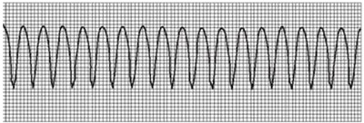
A Reiniciar ressuscitação cardiopulmonar.
B Verificar o ritmo do paciente.
C Verificar o pulso do paciente.
D Administrar 1mg de epinefrina.
Revisar: possível letra faltando em enunciado
Questão 4 · Desf ibrilação · Taquicardias ventriculares · 4000183503Homem de idade aparente de 50 anos deu entrada na sala de emergência, carregado pelos seguranças do hospital, após desmaio na recepção do local. Está irresponsivo e sem pulso. Você coloca as pás do des brilador no tórax do paciente e identifica uma taquicardia ventricular monomórfica. Qual deve ser a estratégia terapêutica prioritária nesse momento?
A Adenosina, 6mg EV, em bolus rápido, seguida de um “flash” de 20 ml de Soro Fisiológico;
B Amiodarona, 300mg EV, seguida de um “flash” de 20 ml de Soro Fisiológico;
C Desfibrilação com 200J (desfibrilador bifásico);
D Cardioversão Sincronizada com 100 joules (desfibrilador bifásico).
Questão 5 · Suporte Básico de Vida · Cardiologia · 4000183310Homem de 76 anos chega à emergência desacordado. Ao avaliá-lo, percebe-se que é portador de marca-passo unicameral por histórico de bloqueio átrio ventricular total prévio e está em parada cardiorrespiratória por brilação ventricular. Assinale a alternativa adequada para o atendimento desse paciente.
A Manejar com massagem cardíaca, sendo contraindicada desfibrilação pelo fato de o paciente ser portador de marca-passo.
B Utilizar antiarrítmicos por via parenteral como primeira medicação durante a reanimação desse paciente pelo fato de não ser possível a desfibrilação elétrica.
C Proceder à desfibrilação, independentemente da presença de marca-passo prévio.
D Encaminhar o paciente ao cateterismo cardíaco de urgência, antes de qualquer manobra de reanimação, visto que a causa provável da fibrilação ventricular é infarto do miocárdio.
Questão 6 · Cuidados pósressuscitação · Cardiologia · 4000182840Paciente masculino, de 60 anos, apresentou parada cardiorrespiratória em ambiente extra-hospitalar. A reanimação foi iniciada no local e 3 choques foram aplicados com des brilador externo automático (DEA). Quando a equipe do SAMU chegou, o paciente estava irresponsivo, mas apresentava pulso, frequência respiratória de 30 mpm, pressão sistólica de 70 mmHg e saturação de 80% em ar ambiente. Como deve ser a continuidade do cuidado antes de transportá-lo para o hospital?
A Oferecer oxigênio suplementar por máscara com reservatório e cristaloide gelado intravenoso.
B Oferecer oxigênio suplementar por máscara com reservatório e cristaloide gelado e amiodarona contínua intravenosos.
C Intubar e administrar vasopressor e amiodarona contínua intravenosos.
D Intubar e administrar cristaloide e vasopressor intravenosos.
Questão 7 · Suporte Básico de Vida · Cardiologia · 4000181607Um homem de 63 anos, recebendo medicação para dor epigástrica na sala de observação do pronto atendimento, apresenta um colapso ao levantar-se da poltrona. Qual é a conduta imediata mais adequada nesse caso?
A Realizar um eletrocardiograma de 12 derivações.
B Checar a responsividade.
C Aplicar 1mg de epinefrina EV.
D Iniciar compressões torácicas.
E Solicitar avaliação da cardiologia.
Questão 8 · Monitorização durante a PCR · Cardiologia · 4000170550Em um caso de parada cardiorrespiratória, em um setor de emergência, após realizada a intubação orotraqueal, nota-se, no monitor do leito, o valor de pressão arterial diastólica de 25 mmHg e a capnometria (ETCO2) de 17 mmHg. Com base nesse caso hipotético, assinale a alternativa que apresenta a orientação que deverá ser dada à equipe no momento.
A aumentar o número de compressões por minuto, visto que pressões menores de 25 mmHG indicam baixa velocidade de compressão
B aumentar a força da massagem cardíaca para aumentar a profundidade da compressão para além de 5 cm, visto que a pressão arterial diastólica está abaixo de 40 mmHg
C continuar com o protocolo, visto que os parâmetros indicam massagem cardíaca adequada
D diminuir o número de compressões por minuto, visto que pressões menores de 25 mmHG indicam alta velocidade de compressão
E trocar de socorrista, visto que ETCO2 abaixo de 35 a 40 mmHg indica fadiga do socorrista
Questão 9 · Abordagem do paciente em parada cardiorrespiratória PCR · 4000168898Durante o atendimento à parada cardiorrespiratória, o acesso venoso profundo está contraindicado. A explicação que fundamenta tal recomendação é:
A Piora do prognóstico neurológico por interrupção das compressões torácicas.
B Maior risco de ocorrência de pneumotórax.
C Dificuldade técnica no acesso venoso central.
D Maior incidência de punção de vasos arteriais.
Questão 10 · Torsades de pointes · 4000168351Paciente de 55 anos foi hospitalizada por insu ciência cardíaca, tendo evoluído para parada cardíaca. Exames laboratoriais iniciais indicaram potássio de 3 mEq/l (valor de referência: 3,6-5,2 mEq/l), magnésio de 1,2 mg/dl (valor de referência: 1,7-2,1 mg/dl) e creatinina de 0,8 mg/dl (valor de referência: 0,6-1,3 mg/dl). O eletrocardiograma reproduzido abaixo mostra o ritmo inicial. Com base nas informações, assinale a alternativa que contempla o tratamento apropriado para a paciente.
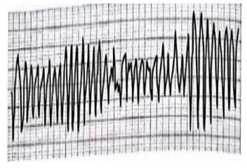
A Choque sincronizado e reposição de potássio e magnésio.
B Choque sincronizado e reposição de potássio e bicarbonato.
C Choque não sincronizado, reposição de magnésio e administração de furosemida.
D Choque não sincronizado e reposição de magnésio apenas.
Questão 11 · Def inição · Abordagem do paciente em parada cardiorrespiratória PCR · 4000167125Um homem de aproximadamente 50 anos apresenta um colapso na recepção do pronto-socorro e é levado diretamente para a sala de emergência. Após verificar a responsividade, qual é a conduta mais adequada?
A Iniciar compressões torácicas.
B Aplicar duas ventilações de resgate.
C Acesso venoso calibroso e expansão volêmica.
D Eletrocardiograma de 12 derivações.
E Checar o pulso carotídeo e a respiração.
Questão 12 · Capnograf ia · Monitorização durante a PCR · Capnograf ia · 4000165556Homem de 65 anos de idade é admitido por insu ciência respiratória aguda no Pronto-Socorro. Durante o atendimento inicial, evolui com piora do padrão respiratório e da hipoxemia, optando-se por intubação orotraqueal. Nesse momento, a frequência respiratória é de 40 irpm, saturação de oxigênio de 88% com máscara não reinalante a 15L/min, frequência cardíaca de 120bpm e pressão arterial de 60x30 mmHg. Após a intubação orotraqueal, a capnogra a mostra a seguinte curva: Qual é o diagnóstico mais provável?

A Intubação esofágica.
B Pneumotórax.
C Intubação seletiva.
D Broncoespasmo.
Questão 13 · Tratamento da TVFV · Cardiologia · 4000165228Homem, 72 anos, hipertenso, diabético e dislipidêmico é levado ao pronto-socorro inconsciente, sem respiração e sem pulso. Foi admitido na sala de emergência apresentando o seguinte traçado no monitor: Assinale a alternativa que apresenta a sequência inicial correta de condutas.
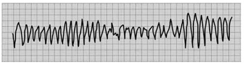
A 1º Desfibrilação; 2º compressão/ventilação por 2 minutos; 3º verificar se o ritmo ainda é chocável.
B 1º Compressão/ventilação por 2 minutos; 2º desfibrilação; 3º adrenalina/lidocaína.
C 1º Compressão/ventilação por 2 minutos; 2º adrenalina; 3º desfibrilação.
D 1º Desfibrilação; 2ºamiodarona; 3º compressão/ventilação por 2 minutos.
E 1º Intubação orotraqueal; 2º compressão/ventilação por 2 minutos; 3º desfibrilação.
Questão 14 · Torsades de pointes · Cardiologia · 4000164845O paciente anterior evoluiu para o achado abaixo, associado a rebaixamento do nível de consciência e hipotensão. Qual a conduta imediata mais adequada?
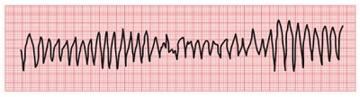
A Desfibrilar o paciente com carga máxima do aparelho.
B Cardioverter o paciente com 100J em aparelho bifásico.
C Infundir 300mg de Amiodarona.
D Cardioverter o paciente com 100J em aparelho monofásico.
Questão 15 · Compressões torácicas · 4000185137Parturiente, 28 anos de idade, G1 P2 (partos vaginais), idade gestacional de 38 semanas, 5 cm de dilatac leito de pre como conduzir o caso de forma a ter o melhor resultado materno e perinatal?
A Desviar o u
B Encaminhar a paciente de volta ao bloco ciru
C Iniciar a ressuscitaça
D Iniciar compresso
Questão 16 · Desf ibrilação · 4000151979Você está de plantão e um paciente de 19 anos é admitido sem consciência. Você verifica que o paciente está sem pulso e inicia as manobras de reanimação cardiopulmonar. Assim que o des brilador (monofásico) está disponível, você verifica o seguinte ritmo: Qual é sua conduta?
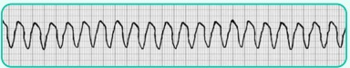
A Realizar cardioversão elétrica sincronizada com 100 J.
B Realizar desfibrilação com 200 J.
C Realizar cardioversão elétrica sincronizada com 200 J.
D Realizar desfibrilação com 360 J.
E Administrar adrenalina 1 mg IV, pois trata-se de um ritmo não chocável.
Questão 17 · Abordagem do paciente em parada cardiorrespiratória PCR · 4000146223A Massagem Cardíaca Interna (MCI) é superior à RCP padrão, pois promove maior pressão de perfusão coronariana. Podemos apenas aceitar como adequado o item:
A Nenhum trabalho com bons resultados da MCI após trauma fechado ou aberto (sobrevida e grau de déficit neurológico na alta, mas não há evidência para seu uso rotineiro.
B Muitos trabalhos referem-se a bons resultados da MCI após trauma fechado ou aberto (sobrevida e grau de déficit neurológico na alta, mas não há evidência para seu uso rotineiro.
C Muitos trabalhos referem-se a bons resultados da MCI após trauma fechado ou aberto (sobrevida e grau de déficit neurológico na alta, sendo seu uso rotineiro.
D Muitos trabalhos referem-se a resultados péssimos da MCI após trauma fechado ou aberto (sobrevida e grau de déficit neurológico na alta, mas há evidência para seu uso rotineiro e padronizado.
Questão 18 · Desf ibrilação · 4000146221Considerando as recomendações para seleção da energia do des brilador/ cardioversor, somente pode-se indicar como correto que:
A Utilizar energia máxima (300 J no desfibrilador bifásico se a dose inicial recomendada pelo fabricante for desconhecida e 360 J no desfibrilador monofásico durante o procedimento de desfibrilação.
B Utilizar energia máxima (200 J no desfibrilador bifásico se a dose inicial recomendada pelo fabricante for desconhecida e 360 J no desfibrilador monofásico durante o procedimento de desfibrilação.
C Utilizar energia máxima (200 J no desfibrilador bifásico se a dose inicial recomendada pelo fabricante for desconhecida e 360 J no desfibrilador monofásico durante o procedimento de cardioversão.
D Utilizar energia máxima (100 J no desfibrilador bifásico se a dose inicial recomendada pelo fabricante for desconhecida e 360 J no desfibrilador monofásico durante o procedimento de desfibrilação
Questão 19 · Desf ibrilação · 4000146220Considerando as indicações para desfibrilação/cardioversão, demonstre o item errado:
A A desfibrilação deverá ser utilizada no tratamento da FV, TV sem pulso e TV polimórfica sustentada.
B A desfibrilação em ritmos chocava deve ser priorizada e não retardada frente a outras manobras na PCR.
C A CVE deverá ser utilizada no tratamento das taquiarritmias associadas a sinais de instabilidade.
D A presença de dispneia, associada à congestão pulmonar, dor torácica anginosa ou rebaixamento do nível de consciência, não indica instabilidade.
Questão 20 · Suporte Avançado de Vida · 4000146205O uso da adrenalina na parada cardiorrespiratória tem como objetivo principal:
A Aumentar a pressão diastólica e automaticidade miocárdica melhorando a perfusão renal.
B Restabelecer a circulação espontânea e melhorar a sobrevida pós parada cardíaca.
C Aumentar o consumo de oxigênio pelo miocárdio e, assim, restabelecer o débito cardíaco.
D Restabelecer a circulação espontânea através do aumento da pressão de perfusão coronária e manter a perfusão cerebral.
Questão 21 · Suporte Básico de Vida · 4000145984Você está andando na rua voltando para casa após um dia cansativo, quando encontra um idoso pedindo ajuda com dor no peito. Ao chegar próximo, o idoso cai ao solo, arresponsivo. Ao verificar, nota-se ausência de pulso. Após avaliar a segurança da cena e pedir ajuda, qual deve ser a próxima conduta imediata neste caso?
A Compressões torácicas de alta qualidade, enquanto se aguarda chegada de ajuda/desfibrilador externo automático - DEA.
B Ventilação boca-a-boca, e então iniciar manobras de ressuscitação cardiopulmonar com 100 movimentos/minuto.
C Aguardar a chegada do desfibrilador externo automático, pela possibilidade de ritmo chocável.
D Promover abertura de via aérea, posicionar e iniciar ventilações pulmonares bolsaválvula-máscara.
Questão 22 · Torsades de pointes · 4000144705Homem, 64 anos de idade, em uso de hidroxicloroquina e azitromicina, chegou hipotenso ao PS com PA= 80/60 mmHg, apresentando no monitor torsades de pointes. Qual é a conduta mais adequada neste momento?
A Sulfato de magnésio 2g IV.
B Amiodarona 150mg IV.
C Cardioversão 100 j.
D Desfibrilação 200 j
Questão 23 · Suporte Avançado de Vida · RCP na gestação · Cardiologia · 4000142183Uma gestante G3C2, com idade gestacional de 35 semanas e portadora de miocardiopatia hipertró ca, procura a emergência obstétrica referindo dor torácica retroesternal, que começou há cerca de 30 minutos, associada a dispneia e diaforese importantes. A paciente é encaminhada para a maca e iniciam-se monitorizações fetal e materna. Logo depois, a paciente torna-se irresponsiva, com pulso carotídeo não palpável e monitor cardíaco mostrando traçado de brilação ventricular. A equipe de plantão é chamada para auxílio e dá início a protocolo de reanimação cardiopulmonar (RCP). Nesse caso clínico, após serem adotadas todas as medidas – massagem e ventilação, drogas antiarrítmicas e des brilação, sem sucesso – o próximo passo é
A manter a RCP, manter aparelhos de monitorização fetal e comunicar a equipe pediátrica de plantão quanto à cesárea
B manter a RCP e realizar assepsia para cesárea
C interromper a RCP e preparar bandeja cirúrgica com material para cesárea
D manter RCP e, após quatro minutos sem resposta às medidas de reanimação, realizar cesárea perimortem apenas com bisturi.
E interromper a RCP, deslocar o útero para a esquerda para melhorar o retorno venoso e iniciar cesárea perimortem
Revisar: possível letra faltando em enunciado
Questão 24 · Síndrome do QT longo · 4000140611Homem de 72 anos de idade está internado em Unidade de Terapia Intensiva há dois dias, por diagnóstico de covid-19. O quadro iniciou-se há oito dias, com febre, anosmia, odinofagia e tosse. O diagnóstico foi feito quatro dias depois, e devido a saturação de oxigênio de 91% em ar ambiente foi internado em enfermaria. Há 2 dias evoluiu com insu ciência respiratória demandando transferência à UTI e intubação orotraqueal. O médico assistente se prepara para avaliar o paciente no dia de hoje. Uma vez dentro do “box”, o médico ouve o alarme do monitor soar e detecta a arritmia abaixo. A avaliação e tratamento adequados foram feitos e a arritmia foi revertida. Considerando os itens abaixo da prescrição médica do Sr. João, qual item deverá ser suspenso da prescrição?

A Azitromicina 500mg SNE 1 x ao dia.
B Ceftriaxone 1g IV 12/12h.
C Inalação com salbutamol 6/6h.
D Terbutalina subcutânea ACM.
Questão 25 · Suporte Básico de Vida · 4000131062Logo após a aplicação da terapia elétrica anterior qual a conduta imediata?
A Verificar se o paciente apresenta pulso
B Verificar qual o novo ritmo cardíaco
C Reiniciar compressões cardíacas imediatamente
D Aplicar Amiodarona na dose de 300mg
Questão 26 · Torsades de pointes · 4000129732Considere uma paciente feminina, 85 anos, trazida à emergência devido à síncope. Na avaliação inicial a paciente encontra- se consciente, sem dé cit neurológico focal, pressão arterial de 110/70 mmHg e frequência cardíaca de 80 batimentos/minuto. Durante monitoração eletrocardiográ ca foram observados episódios de taquicardia com complexo QRS alargado sugestivo de Torsades de Pointes. Exames laboratoriais relevantes: potássio sérico de 3,5 mEq/ dL; e magnésio sérico de 1,47 mg/dL . A paciente tem antecedentes de hipertensão arterial sistêmica, brilação atrial crônica e transtorno depressivo. Fazia uso domiciliar de candesartan, metoprolol, marevan, sinvastatina e escitalopram. Há 3 dias iniciou uso de levo oxacino para tratamento de uma infecção respiratória. Assinale a alternativa correta quanto à abordagem terapêutica da arritmia apresentada pela paciente.
A Check-square Sulfato de magnésio endovenoso e suspensão do levofloxacino e do escitalopram.
B Sulfato de magnésio endovenoso e cardioversão elétrica.
C Amiodarona endovenosa e suspensão da sinvastatina e do escitalopram.
D Amiodarona e sulfato de magnésio endovenosos e suspensão do escitalopram.
E Cardioversão elétrica, suspensão do candersartan e do metoprolol.
Revisar: possível letra faltando em enunciado
Questão 27 · Tratamento da AESPassistolia · Cardiologia · 4000129452Assinale a assertiva correta sobre o atendimento de pacientes em parada cardiorrespiratória (PCR).
A Intubação orotraqueal é preferível a uso de dispositivos supraglóticos no atendimento de pacientes em PCR intra- hospitalar.
B Vasopressina pode ser utilizada em substituição a adrenalina.
C Adrenalina deve ser administrada assim que possível, independentemente do ritmo da PCR.
D Atropina está indicada nos ritmos não chocáveis da PCR.
Questão 28 · Tratamento da TVFV · Cardiologia · 4000120084Um homem de 42 anos de idade foi levado, pelo SAMU, ao pronto-socorro, em parada cardiorrespiratória (PCR) e apresentando o ritmo mostrado a seguir. Foram iniciadas manobras de reanimação cardiopulmonar conforme preconizado pelo ACLS2018. Com base nesse caso hipotético, assinale a alternativa correta.

A A vasopressina é o vasopressor de escolha no tratamento de PCR nesse ritmo, tendo a melhor classe de recomendação e o melhor nível de evidência.
B A vasopressina ou epinefrina pode ser utilizada no tratamento de PCR nesse ritmo, com a mesma classe de recomendação e o mesmo nível de evidência.
C A amiodarona é o antiarrítmico de escolha para tratamento desse ritmo, quando refratário, tendo a melhor classe de recomendação e o melhor nível de evidência.
D A lidocaína é o antiarrítmico de escolha para o tratamento desse ritmo, quando refratário, tendo a melhor classe de recomendação e o melhor nível de evidência.
E A amiodarona ou lidocaína pode ser utilizada no tratamento desse ritmo, quando refratário, com a mesma classe de recomendação e o mesmo nível de evidência.
Questão 29 · Tratamento da TVFV · 4000114138Qual seria o diagnóstico e a melhor conduta para um paciente sem pulsos palpáveis e com a imagem, abaixo, no monitor:

A Taquicardia supraventricular e cardio versão elétrica sincronizada com 100 Joules.
B Taquicardia ventricular sem pulso e adrenalina 1mg IV em bolus.
C Taquicardia ventricular polimórfica e cardioversão elétrica com choque sincronizado de200 Joules.
D Taquicardia ventricular polimórfica e desfibrilação com 200 Joules.
Questão 30 · Manejo de vias aéreas · Intubação traqueal · Laringoscopia direta · 4000105966Não se interrompe a RCP para a laringoscopia, sendo adequado que:
A Podendo-se interrompê-la, por menos de 50 segundos, para IOT e checagem do posicionamento do dispositivo.
B Podendo-se interrompê-la, por menos de 10 segundos, para IOT e não na checagem do posicionamento do dispositivo.
C Podendo-se interrompê-la, por menos de 30 segundos, para IOT e checagem do posicionamento do dispositivo.
D Podendo-se interrompê-la, por menos de 10 segundos, para IOT e checagem do posicionamento do dispositivo.
Questão 31 · Suporte Básico de Vida · Cardiologia · 4000075660Um paciente é admitido no pronto atendimento trazido por colegas após cair durante um jogo de futebol há 10 minutos. Você percebe que o paciente encontra-se sem pulso e inicia manobras de ressuscitação cardiopulmonar. Após 30 segundos o desfibrilador chega e você utiliza as pás para obter o traçado abaixo: Após a aplicação do choque, qual deve ser a sua conduta?

A Reiniciar compressões cardíacas imediatamente, após 2 minutos verificar novamente o ritmo cardíaco, aplicar a primeira dose epinefrina apenas após uma segunda tentativa de desfibrilação sem sucesso.
B Palpar pulso do paciente, caso não apresente pulso reiniciar imediatamente as compressões cardíacas, aplicar epinefrina o mais rápido possível.
C Reiniciar compressões cardíacas imediatamente e aplicar epinefrina o mais rápido possível.
D Verificar o ritmo no monitor, caso persista no mesmo ritmo, aplicar o novo choque e então reiniciar compressões.
E Palpar o pulso, caso não apresente pulso, reiniciar compressões cardíacas e aplicar amiodarona 150mg o mais rápido possível.
Questão 32 · Desf ibrilação · Cardiologia · 4000075643Um paciente é admitido no pronto atendimento trazido por colegas após cair durante um jogo de futebol há 10 minutos. Você percebe que o paciente encontra-se sem pulso e inicia manobras de ressuscitação cardiopulmonar. Após 30 segundos o desfibrilador chega e você utiliza as pás para obter o traçado abaixo: Qual a sua conduta para esse paciente, considerando que o desfibrilador que você está utilizando é monofásico?
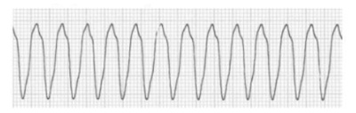
A Realizar 2 minutos de manobras de ressuscitação cardiopulmonar e após aplicar um choque não sincronizado de 360 J.
B Aplicar imediatamente um choque não sincronizado de 200J.
C Aplicar imediatamente um choque sincronizado de 200 J.
D Aplicar imediatamente um choque não sincronizado de 360J.
E Realizar 2 minutos de manobras de ressuscitação cardiopulmonar e após aplicar um choque não sincronizado de 200 J.
Questão 33 · Tratamento da TVFV · 4000075628Um paciente é admitido no pronto atendimento trazido por colegas após cair durante um jogo de futebol há 10 minutos. Você percebe que o paciente encontra-se sem pulso e inicia manobras de ressuscitação cardiopulmonar. Após 30 segundos o desfibrilador chega e você utiliza as pás para obter o traçado abaixo: Qual o ritmo encontrado?
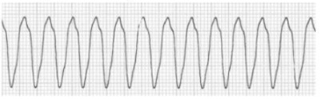
A Fibrilação Ventricular
B Taquicardia SupraVentricular
C Taquicardia Ventricular
D Fibrilação Atrial
E Torsades des Pointes
Questão 34 · Distúrbios do ritmo · Diagnóstico do IAMCSST · Cuidados pósressuscitação · 4000075078Homem, 68 anos, hipertenso, tabagista, comparece à emergência com dor torácica de forte intensidade, irradiada para membro superior esquerdo com início há uma hora. Antes de realizar o eletrocardiograma, apresentou parada cardiorrespiratória. Iniciadas as manobras de reanimação cardiopulmonar com compressões torácicas, ventilação por bolsa- valva-máscara e epinefrina, com retorno da circulação espontânea após 7 minutos. O ECG pós-PCR é mostrado a seguir. A conduta mais adequada para o paciente, neste momento, sabendo-se que o serviço de hemodinâmica mais próximo ca a quatro horas de distância, é:

A transferência para hospital terciário sem trombólise
B trombólise e transferência imediata para hospital terciário
C amiodarona, dupla antiagregação plaquetária e anticoagulação
D não administrar terapia antitrombótica para viabilizar hipotermia
Revisar: possível letra faltando em enunciado
Questão 35 · Tratamento da TVFV · 4000066388Quais são os ritmos chocáveis através de desfribilação cardíaca?
A Taquicardia ventricular sem pulso e bradicardia ventricular sem pulso
B Fibrilação ventricular e fibrilação atrial
C Assistolia e atividade elétrica sem pulso
D Flutter atrial e fibrilação ventricular
E Taquicardia ventricular sem pulso e Torsades de pointes
Questão 36 · Suporte Avançado de Vida · 4000061810Segundo o livro-texto do curso ACLs (Advanced Cardiology Life Support), assinale a alternativa correta.
A A onda de capnografia pode e deve ser utilizada em todo período da ressucitação cardiopulmonar, mesmo em pacientes que ainda não tenham sido entubados.
B A onda de capnografia não está mais sendo usada nos últimos algoritmos do ACLs.
C Após uma elevação abrupta (30 mmHg na Petco2), as manobras devem ser suspensas e o pulso deve ser avaliado.
D Uma onda de capnografia quantitativa < 10 mmHg indica que as compressões estão eficientes.
E Uma onda de capnografia quantitativa < 10 mmHg indica que as compressões estão ineficientes.
Questão 37 · Suporte Avançado de Vida · 4000039537Durante uma reanimação cardiopulmonar, qual recomendação de massagem cardíaca e ventilação, após a obtenção de via aérea avançada:
A 1 ventilação a cada 30 compressões torácicas.
B 2 ventilações a cada 30 compressões torácicas.
C 1 ventilação a cada 6 segundos e compressões torácicas contínuas.
D 1 ventilação a cada 10 segundos e compressões torácicas contínuas.
Questão 38 · Compressões torácicas · 4000038684Um senhor de 54 anos de idade comparece à Unidade Básica de Saúde (UBS), para acompanhar sua esposa à consulta de rotina. Durante a espera, ele sofre um colapso, cai da cadeira e, sem apresentar movimentos respiratórios, deixa de responder. Nesse momento, a recepcionista aciona o Serviço de Atendimento Móvel de Urgência (SAMU), enquanto o médico e a enfermeira da UBS iniciam as manobras de primeiros socorros realizando compressões torácicas. Na situação descrita, a profundidade e a frequência das compressões torácicas realizadas pelos socorristas deverá ser de:
A profundidade de 2,0 cm e frequência de 30 a 60 compressões por minuto.
B profundidade de 3,0 cm e frequência de 60 a 80 compressões por minuto.
C profundidade de 4,0 cm e frequência de 60 a 80 compressões por minuto.
D profundidade de 5,0 cm e frequência de 80 a 90 compressões por minuto.
E profundidade de 5,0 cm e frequência de 100 a 120 compressões por minuto.
Questão 39 · Tratamento da AESPassistolia · Ventilação · Desf ibrilação · 4000011520Homem, 63 anos de idade, internado, foi encontrado inconsciente. Após verificação de pulso central foi observado no monitor cardíaco o ritmo abaixo. Além de chamar por ajuda e solicitar desfibrilador imediatamente, você deve:

A Iniciar compressões torácicas, com desfibrilação o mais precoce possível para retorno a circulação espontânea
B Iniciar compressões torácicas, realizar epinefrina na dose de 1 mg IV em bolus e identificar as causas da parada cardiorrespiratória
C Aplicar desfibrilação na carga máxima do aparelho e providenciar marca-passo transcutâneo
D Instalar marca-passo transcutâneo e providenciar marca-passo transvenoso, caso não haja retorno do ritmo
E Aplicar desfibrilação na carga máxima do aparelho e iniciar compressões torácicas após o choque
Questão 40 · Desf ibrilação · 4000112583Paciente de 55 anos é encontrado inconsciente. Ele não respira e não te pulso. Prontamente iniciadas manobras de ressuscitação cardiopulmonar, e, ao monitorizar o paciente, encontra-se uma briação ventricular. A prioridade, nesse instante, deve ser de
A submeter o paciente á intubação orotraqueal.
B cardioverter o paciente com 200J.
C providenciar um acesso venoso e prescrever amiodarona 300 mg.
D desfibrilar o paciente com 200J.
E providenciar um acesso venoso e prescrever adrenalina 1 mg, após bolus de 10 mL de soro fisiológioco e elevar o braço do paciente.
Questão 41 · Tratamento da AESPassistolia · Antiarrítmicos · 4000106130Assinale a alternativa que contém apenas os nomes dos antiarrítmicos usados na Fibrilação Ventricular ou Taquicardia Ventricular sem pulso:
A Atropina, Amiodarona, Carbonato de cálcio.
B Amiodarona, Epinefrina, Sulfato ferroso.
C Amiodarona, Epinefrina, Lidocaína.
D Amiodarona, Sulfato de Magnésio, Metroprolol.
E Amiodarona, Lidocaína, Sulfato de Magnésio.
Questão 42 · Monitorização durante a PCR · 4000105229Durante o 3º ciclo de reanimação cardiopulmonar (6 minutos), em PCR presenciada em AESP, um paciente foi submetido à intubação orotraqueal com capnografia. Considerando a monitorização mostrada na figura acima, as compressões:
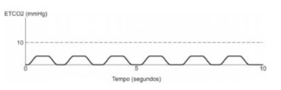
A Devem ser melhoradas e recomenda-se aumentar a frequência das ventilações.
B Devem ser melhoradas e recomenda-se reduzir a frequência das ventilações.
C Não foram efetivas e recomenda-se suspender os esforços de reanimação.
D Estão sendo efetivas e recomenda-se aumentar a frequência das ventilações.
E Estão sendo efetivas e provavelmente houve retorno a circulação espontânea.
Questão 43 · Tratamento da AESPassistolia · 4000105114Homem de 45 anos chega ao pronto-socorro com queixa de palpitação e, logo após realizar o eletrocardiograma abaixo, perdeu a consciência. A conduta imediata, de acordo com o ACLS, após checagem de pulso, deve ser, se pulso:
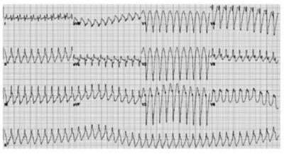
A Ausente: iniciar massagem cardíaca e proceder desfibrilação assim que possível.
B Presente: não fazer massagem cardíaca e administrar amiodarona assim que possível.
C Ausente: iniciar massagem cardíaca e proceder administração de epinefrina assim que possível.
D Ausente: iniciar massagem cardíaca e proceder cardioversão elétrica assim que possível.
E Presente: não fazer massagem cardíaca e proceder desfibrilação assim que possível.
Questão 44 · Suporte Avançado de Vida · 4000100395Qual é a dose cumulativa de amiodarona que utilizamos na fibrilação ventricular em adultos?
A 300 mg
B 450 mg
C 600 mg
D 900 mg
Questão 45 · Compressões torácicas · 4000100380Em uma ressuscitação cardiopulmonar, qual é o local exato que devemos fazer a massagem cardíaca externa?
A Sob o apêndice xifoide
B No terço médio do esterno
C Na área precordial
D Dois centímetros acima do apêndice xifoide
Questão 46 · Abordagem do paciente em parada cardiorrespiratória PCR · 4000091109Em relação ao atendimento da parada cardiorrespiratória em adulto, de acordo com a Associação Americana do Coração, é CORRETO afirmar que:
A Apenas nos casos de assistolia devemos iniciar o atendimento com ventilações.
B A correta relação entre compressões torácicas e ventilações é 30:2.
C A frequência das compressões torácicas deve ser de pelo menos 100 por minuto.
D A manobra de Heimlich deve ser realizada em todas as vítimas de afogamento.
E Mesmo quando o paciente já estiver com via aérea definitiva, é necessário interromper as compressões torácicas para realizar as ventilações.
Questão 47 · Tratamento da TVFV · 4000080622Durante o atendimento ao paciente vítima de parada cardiorrespiratória uma equipe, com o atendimento em curso realizando o suporte básico, aplica o primeiro choque e 2 minutos de RCP. Neste exato momento, ao assumir a liderança, qual o próximo passo que você indica?
A Checar o pulso
B Protocolo da linha reta
C Checar o ritmo
D Aplicar 1 mg de adrenalina Subcutâneo
Questão 48 · Torsades de pointes · Cardiologia · 4000071107A síndrome do QT longo com taquicardia ventricular por torsades de points é característica por intoxicação exógena por:
A Ibuprofeno.
B Gasolina.
C Organofosforado.
D Paraquat.
E Cloranfenicol.
Questão 49 · Suporte Avançado de Vida · Suporte Básico de Vida · Tratamento da AESPassistolia · 4000066671Paciente atendido no PS por síncope. A equipe do resgate constata: paciente sem resposta neurológica e pulso. Iniciada a reanimação, o paciente tem acesso venoso pego e é monitorado em aparelho des brilador. Após 2 minutos o ritmo é sinusal, mas não há melhora no nível de consciência, nem presença de pulso. Podemos dizer que:
A A ressuscitação cardiopulmonar deve ser feita de 1 em 1 minuto, com pausa para checar o ritmo no desfibrilador.
B Devemos administrar desfibrilação com 200 Joules e massagear por 2 minutos, antes de conferir novamente o ritmo.
C Devemos tentar identificar causas reversíveis como hipóxia e hipovolemia, neste paciente.
D O paciente se beneficiaria de amiodarona 300 mg em bolus.
Questão 50 · Tratamento da TVFV · 4000060669Paciente chega ao pronto-socorro com parada cardíaca em Fibrilação Ventricular (FV). Após o choque, o médico se antecipa e pede à enfermeira para preparar 300 mg de amiodarona. Ela informa que a medicação está em falta no hospital. Segundo o protocolo do ACLS, assinale a alternativa que apresenta, corretamente, a melhor conduta em substituição à amiodarona na parada cardíaca em FV sem pulso.
A Indicar atropina na dose de 0,5 mg EV em bolus, substituindo a primeira dose de amiodarona.
B Indicar lidocaína na dose de 1 a 1,5 mg/kg EV em intervalo de 5 a 10 minutos até 1 dose máxima de 3 mg/kg.
C Indicar vasopressina na dose de 40,0 mg EV em bolus, substituindo a primeira dose de amiodarona.
D Indicar epinefrina na dose de 1,0 mg a cada 3 a 5 minutos e não intercalar dose com outros fármacos antiarrítmicos.
E Indicar sulfato de magnésio na dose de 1 a 2 g EV diluídos em 10 ml e fazer em 5 a 20 minutos.-
Questão 51 · Tratamento da AESPassistolia · 4000050043Durante uma Reanimação Cardiopulmonar (RCP), ao nal de um ciclo, é detectado um ritmo organizado no monitor. A frequência é baixa (32 batimentos por minuto) e o complexo QRS alargado (acima de 120ms). Procura-se o pulso central do paciente durante 10 segundos, mas este continua ausente. Qual é a conduta mais adequada a seguir?
A Administrar 1mg de atropina por via endovenosa e reiniciar as compressões torácicas.
B Aplicar 1mg de epinefrina, reiniciar compressões torácicas e seguir com o algoritmo de Atividade Elétrica Sem Pulso (AESP).
C Aplicar choque de 200J, administrar 1mg de atropina por via endovenosa e verificar a pressão arterial.
D Aplicar 0,5mg de atropina por via endovensa e instalar marca-passo transcutâneo.
Questão 52 · Suporte Básico de Vida · 4000049871Um homem de aproximadamente 50 anos apresenta um colapso em via pública. Após verificar sua responsividade, qual é a próxima ação recomendada para profissionais de saúde?
A Checar o pulso carotídeo.
B Chamar ajuda.
C Iniciar compressões torácicas.
D Abrir a via aérea e aplicar duas ventilações de resgate.
Questão 53 · Suporte Básico de Vida · 4000047756Um paciente de 52 anos chega ao pronto-socorro com dor precordial e, durante o atendimento médico, apresenta parada cardiorrespiratória. Nessa situação, a 1ª conduta a ser tomada deve ser:
A abertura das vias aéreas
B intubação orotraqueal
C compressões torácicas ritmadas
D cardiodesfibrilação
E ventilação com dispositivo bolsa-máscara
Questão 54 · Compressões torácicas · 4000041115A respeito da massagem cardíaca externa durante uma parada cardiorrespiratória, é correto afirmar:
A A frequência de compressões deve ser de 80 compressões por minuto.
B A fase de descompressão torácica não é relevante.
C As fraturas de costelas que eventualmente ocorrem facilitam a compressão torácica e o sucesso na reanimação.
D A compressão torácica deve ser em torno de 5 cm de profundidade.
Questão 55 · Tratamento da AESPassistolia · 4000041093Observe o ECG abaixo em paciente usuário de cocaína, e marque a resposta correta.
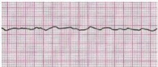
A Diagnóstico de atividade elétrica sem pulso, checar pneumotórax, hipovolemia.
B Administração de adrenalina é ineficaz devido à alteração de receptação serotonina.
C Massagem cardíaca é tão ou mais importante que administração de adrenalina.
D Desfibrilação com 360 J.
Questão 56 · Tratamento da AESPassistolia · Manejo de vias aéreas · 4000017702O médico plantonista da enfermaria de cirurgia é chamado para atendimento de Parada Cardiopulmonar (PCR). Trata-se de A.S.B.M., 55 anos, com neoplasia de mama recidivada e metastática aguardando a possibilidade de quimioterapia de resgate. Foi internada para controle de dor e dispneia. A equipe de cuidados paliativos iniciou mor na em infusão contínua e escreveu no prontuário a vontade expressa da paciente de não ser reanimada, nem levada para UTI. A lha, presente na enfermaria, reiterou a vontade da mãe. A infusão contínua de mor na foi iniciada no dia anterior. No momento do atendimento, o exame da paciente indicou pupilas mióticas puntiformes, inconsciência e apneia com pulso carotídeo presente e fino. Qual a conduta imediata mais adequada a ser adotada pelo plantonista?
A Ventilar com máscara enquanto administra naloxone.
B Respeitar a vontade da paciente, permitindo a apneia evoluir para PCR.
C Iniciar ressuscitação cardiopulmonar com compressões cardíacas, imediatamente.
D Realizar entubação orotraqueal e mantê-la em ventilação mecânica na enfermaria.
Questão 57 · Cuidados pósressuscitação · 4000011153Durante reanimação de um paciente previamente hígido, internado para avaliação pressórica, o quadro evoluiu com parada cardiorrespiratória e ressuscitação por 17 minutos, bem-sucedida. O paciente evolui com estabilidade pressórica, pressão arterial invasiva (PAI) = 84 mmHg, FC = 102 bpm e SatO₂ = 96% sob ventilação mecânica em via aérea definitiva. Intensivista decidiu então fazer hipotermia, com temperatura entre 32 °C e 34 °C, pois o ritmo inicial era brilação ventricular. No que tange a esse caso clínico, assinale a alternativa que equivale a possíveis complicações dessa terapêutica.
A Nova parada cardíaca pelo resfriamento do sistema nervoso central.
B Crises hipertensivas e convulsivas.
C Coagulopatia e risco do aumento de infecção.
D Quadros álgicos intensos com fratura de ossos instáveis.
E Melhora clínica rápida com menos de oito horas de evolução e extubação acidental.
Questão 58 · Tratamento da TVFV · 4000127495Paciente de 50 anos, hipertenso e diabético foi admitido em leito monitorizado por suspeita de síndrome coronariana aguda. Iniciado as medidas adequadas porém paciente evolui para parada cardiorrespiratória em brilação ventricular. Imediatamente o paciente recebe desfibrilação. A conduta a ser tomada a seguir:
A Verificar a presença de pulso.
B Infusão de epinefrina, 1 mg, endovenosa.
C Checar se houve reversão para ritmo sinusal.
D Infusão endovenosa de fibrinolíticos.
E Compressões cardíacas de alta qualidade.
Questão 59 · Tratamento da AESPassistolia · Def inição · 4000124499Paciente de 18 anos, previamente hígida, sofreu acidente automobilístico sem lesões aparentes. Após algumas horas, começou com tontura e sudorese, tendo sido trazida à emergência. À chegada, apresentava-se pálida, sudorética, taquicárdica e hipotensa, sem outras alterações importantes ao exame clínico. Evoluiu para parada cardiorespiratória (PCR) em atividade elétrica sem pulso. Assinale a alternativa que contempla a mais provável causa e o tratamento adequado a ser realizado durante a PCR.
A Pneumotórax hipertensivo - drenagem torácica
B Hipovolemia – reposição de volume.
C Tamponamento cardíaco – realização de janela pericárdica.
D Hiperpotassemia – administração de gluconato de cálcio intravenoso.
E Embolia pulmonar – administração de alteplase intravenosa.
Questão 60 · Suporte Avançado de Vida · 4000117981Mulher, 69 anos, hipertensa, teve alta hospitalar há 3 dias, em internação na qual iniciou terapia renal substitutiva. Compareceu ao hospital para sessão de hemodiálise. Enquanto aguardava ser chamada para a diálise, é encontrada caída no banco onde estava sentada. Você chama, e ela não responde. Não há pulso palpável. O ritmo ao monitor cardíaco é o visualizado abaixo. Qual das medicações abaixo deve ser primeiramente considerada durante a rcp?
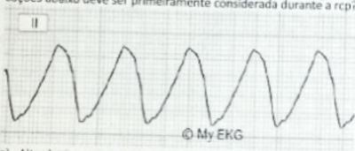
A Alteplase
B Fenoterol
C Bicarbonato de sodio
D Insulina regular
Questão 61 · Tratamento da TVFV · 4000117793Um paciente de 54 anos de idade foi levado pelo SAMU ao serviço de emergência sem pulso central. Quando monitorizado pelas pás do des brilador, apresentou o ritmo mostrado a seguir. Com base nessa situação hipotética, assinale a alternativa que apresenta a sequência CORRETA de ações a serem realizadas:
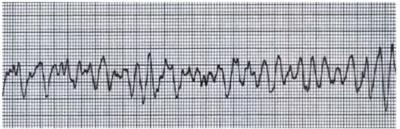
A Adrenalina 1 mg IV, compressões cardíacas alternadas com ventilações (bolsa-válvulamáscara) na frequência 30:2 e desfibrilação.
B Sulfato de magnésio 2 g IV, compressões cardíacas 100 a 120 por minuto, uma ventilação a cada seis segundos (bolsa-válvula-máscara) e desfibrilação.
C Desfibrilação imediata, compressões cardíacas 100 a 120 por minuto e uma ventilação a cada seis segundos (bolsa-válvula-máscara).
D Desfibrilação imediata e, mantendo o ritmo mostrado, após dois minutos decompressões torácicas, checar pulso central.
E Desfibrilação imediata, compressões cardíacas alternadas com ventilações (bolsa-válvula-máscara) na frequência 30:2 e adrenalina 1 mg IV assim que o acesso venoso periférico estiver disponível.
Questão 62 · Tratamento da TVFV · 4000112916Homem de 55 anos de idade chega no PS em FV, qual é o momento mais adequado para desfibrilar este paciente:
A Imediatamente.
B Após a primeira adrenalina.
C Após 1 ciclo de massagem.
D Preferencialmente após a metilprednisolona.
Questão 63 · Tratamento da TVFV · Cardiologia · 4000104935Homem de 57 anos chega ao pronto atendimento queixando-se de dor precordial em aperto com irradiação para braço esquerdo, sudorese, náusea e dispneia. No eletrocardiograma de entrada foi detectado supradesnivelamento do segmento ST em derivações inferiores. Realizadas medicações iniciais na sala de emergência. Enquanto a equipe se preparava para o transporte para a cineangiocoronariogra a de emergência, para realização de angioplastia primária, o monitor mostrou o traçado abaixo em ganho máximo. A conduta imediata nessa situação é:
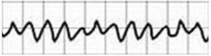
A Amiodarona 300 mg IV.
B Checar pulso.
C Desfibrilação.
D Amiodarona 150 mg IV.
E Cardioversão elétrica sincronizada.
Questão 64 · Abordagem do paciente em parada cardiorrespiratória PCR · 4000095710Sobre a reanimação cardiopulmonar,marque a afirmação CORRETA.
A Ao monitorar as compressões torácicas durante a reanimação deve-se garantir que esteja sendo realizado um procedimento de alta qualidade, isso significa comprimir forte e permitir o retorno completo do tórax à sua posição normal entre as compressões.
B Ao monitorar as compressões torácicas durante a reanimação deve-se garantir que esteja sendo realizado um procedimento de alta qualidade, isso significa comprimir forte e rápido na velocidade de, pelo menos, 120 por minuto.
C O DEA reconhece o ritmo e ordena a liberação do choque se um ritmo não chocável for identificado.
D O paciente deve estar posicionado em decúbito frontal para a realização das compressões torácicas.
Questão 65 · Suporte Básico de Vida · 4000083438Você foi fazer a matrícula da residência, mas chega antes e vai na cafeteira. Enquanto fazia seu pedido o atendente se queixou de dor precordial e caiu desacordado na sua frente. O que você deve fazer na sequência?
A Verificar se a vítima está inconsciente, verificar ausência de pulso e ventilação, iniciar compressões torácicas - ventilação na frequência 30 compressões para 2 ventilações (30:2).
B Iniciar compressões torácicas - ventilação 30:2 - e solicitar ajuda e um Desfibrilador Externo Automático (DEA).
C Solicitar para que alguém chame ajuda, questionar se há um DEA e verificar se o local é seguro para o socorrista, verificar se a vítima responde, verificar ausência de respiração ou gasping, ausência de pulso, iniciar compressões torácicas - ventilação 30:2.
D Chamar ajuda, verificar se o local é seguro para o socorrista, verificar se a vítima responde, verificar pulso, iniciar compressões - ventilação 30:2.
E Chamar ajuda, verificar se o local é seguro para o socorrista, verificar se a vítima responde, verificar ausência de respiração e pulso, iniciar massagem torácica na frequência 100-120 compressões por minuto e ventilação 10 por minuto.
Questão 66 · Compressões torácicas · 4000055111Reanimação Cardiopulmonar (RCP) de alta qualidade inclui:
A Comprimir o tórax com força, rapidez, permitindo o retorno total após cada compressão e minimizando interrupções nas compressões torácicas.
B Manter a via aérea de pacientes inconscientes por meio de uma via aérea avançada obrigatória, obtida antes de iniciar as compressões torácicas.
C Ventilar excessivamente com Oxigênio suplementar a 100% diante de uma parada cardiopulmonar (PCR).
D Evitar alternar as pessoas que aplicam as compressões torácicas e, em caso de fadiga, a troca deve ser realizada a cada 5 minutos.
E Avaliar as possíveis causas de uma PCR (“5Hs e 5Ts”) antes de executar as ações de Suporte Avançado de Vida.
Questão 67 · Síndrome do QT longo · 4000036084A Síndrome do QT longo congênito é considerada a mais antiga das canalopatias estudada, fazendo com que a relação entre biologia molecular e genética seja compreendida em termos de manifestações clínicas, estrati cação de risco e tratamento.Representa a principal causa de autópsia negativa em casos de morte súbita em jovens. Sobre isso, assinale a alternativa inadequada:
A Sua principal característica é o prolongamento do intervalo QT corrigido ao ECG, com valores acima de 460 ms.
B Clinicamente, a presença de síncope ou parada cardiorrespiratória desencadeada por estresse emocional e físico deve aventar a hipótese da síndrome do QT longo.
C A arritmia responsável pelos eventos é o TdP, a qual é altamente específica e geralmente autolimitada, podendo levar à síncope transitória.
D Não pode degenerar para Fibrilação Ventricular.
Questão 68 · RCP na gestação · 4000029569A parada cardiorrespiratória (PCR) pode ocorrer em qualquer momento da gestação e até o 42º dia de pós-parto. Tem elevado grau de morbimortalidade materno-fetal. Sobre a ressuscitação cardiopulmonar (RCP) na gestação, assinale a alternativa CORRETA:
A Não usar medicamentos vasopressores na ressuscitação materna devido aos efeitos deletérios fetal.
B A dose dos fármacos utilizados bem como a voltagem do desfibrilador (seja ele monofásico ou bifásico) podem ser mantidas dentro dos valores utilizados para não gestantes.
C A avaliação fetal é de suma importância no atendimento à gestante em parada cardiorrespiratória.
D Manobra de deslocamento manual uterino a partir da 20a semana de gestação não tem se mostrado eficaz.
E Cesárea perimortem deve ser realizada após o quinto minuto de RCP sem sucesso nos casos de gravidez com mais de 20 semanas.
Questão 69 · Compressões torácicas · 4000027842Sobre a técnica de reanimação, em um paciente de 68 anos em parada cardiorrespiratória, assinale a alternativa CORRETA.
A As compressões torácicas devem ter profundidade inferior a 5 cm para não causar fraturas de costelas.
B A fração de compressão torácica deve ser de 40 a 60%.
C As compressões torácicas não devem ser interrompidas durante a ventilação com dispositivo bolsa-máscara- valva no paciente não intubado.
D As compressões torácicas devem ser executadas em uma frequência de 100 a 120 compressões por minuto.
Questão 70 · Desf ibrilação · 4000023851Você atende um paciente que está arresponsivo e sem pulsos. Uma vez iniciadas as manobras de ressuscitação cardiopulmonar (RCP), ao chegar o monitor-des brilador bifásico, você identi ca o ritmo a seguir. A próxima conduta deve ser:
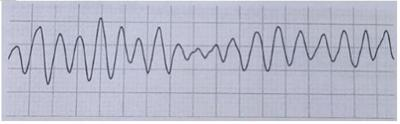
A desfibrilação a 200 Joules, reiniciar a RCP imediatamente.
B RCP por 2 minutos e, então, desfibrilação a 200 Joules.
C desfibrilação a 200 Joules, e reavaliar o ritmo em seguida.
D manter a RCP e infundir adrenalina 1mg IV.
Revisar: possível letra faltando em enunciado
Questão 71 · Suporte Avançado de Vida · 4000022320Qual das afirmações a seguir sobre os efeitos da epinefrina durante a tentativa de ressuscitação é verdadeira?
A a epinefrina reduz a resistência vascular periférica e diminui a pós-carga miocárdica, de modo que as contrações ventriculares são mais eficazes
B a epinefrina melhora a pressão de perfusão da artéria coronária e estimula as contrações espontâneas quando há assistolia
C a epinefrina é contraindicada na fibrilação ventricular, pois aumenta a irritabilidade miocárdica
D a epinefrina reduz o consume de oxigênio miocárdico
E nenhuma das respostas acima
Questão 72 · Tratamento da TVFV · 4000022256Um homem de 54 anos, portador de doença arterial coronariana crônica, apresenta, após intensa emoção, dor torácica precordial e perda da consciência. Os pulsos periféricos não são perceptíveis, e a pressão arterial não foi percebida. O mecanismo provável da parada é:
A assistolia
B atividade elétrica sem pulso
C taquicardia supraventricular
D fibrilação ventricular
E fibrilação atrial
Questão 73 · Tratamento da TVFV · 4000021201Paciente de 55 anos deu entrada no pronto-socorro e foi diagnosticada uma Parada Cardiorrespiratória (PCR) por Fibrilação Ventricular (FV). Qual é o melhor momento para iniciar epinefrina 1 mg?
A Imediatamente, antes da primeira desfibrilação.
B Imediatamente, depois da primeira desfibrilação.
C Após reiniciada a Ressuscitação Cardiopulmonar (RCP), depois da segunda desfibrilação.
D Durante a RCP e imediatamente antes da segunda desfibrilação.
Questão 74 · Desf ibrilação · Cardiologia · 4000019585A desfibrilação e cardioversão elétrica consistem na aplicação de corrente elétrica de alta energia para reversão de arritmias cardíacas geradas pelo mecanismo de reentrada. Somente apresenta dados considerados inadequados a alternativa:
A Na desfibrilação, esta corrente elétrica é aplicada em qualquer momento do ciclo cardíaco, enquanto na cardioversão elétrica, esta corrente é sempre sincronizada com os complexos QRS do eletrocardiograma para que não seja administrada durante o período vulnerável da repolarização ventricular (onda T), quando pode potencialmente desencadear uma fibrilação ventricular.
B Os desfibriladores/cardioversores podem ser classificados de acordo com o modo de operação em: a) manuais, no qual o reconhecimento do ritmo cardíaco e a administração do choque dependem do operador; b) semiautomáticos, também, conhecidos como DEA, nos quais o reconhecimento do ritmo é realizado pelo dispositivo que informa se o choque elétrico é recomendado ou não no tratamento do paciente, sendo que a decisão de aplicar o choque continua sendo do operador.
C Desfibriladores também podem ser classificados em externos e internos. Nos externos, a corrente elétrica é aplicada através da superfície externa do tórax do paciente por meio de pás manuais ou adesivas, enquanto, nos internos, a corrente elétrica é aplicada por cabos eletrodos geralmente implantados através do sistema venoso.
D Na cardioversão a corrente elétrica é aplicada em qualquer momento do ciclo cardíaco, esta corrente é sempre sincronizada para que não seja administrada durante o período refratário da repolarização ventricular (onda T), quando pode potencialmente desencadear uma arritmia.
Questão 75 · Suporte Avançado de Vida · 4000008759Na reanimação cardiopulmonar:
A A vasopressina mostrou-se claramente superior à adrenalina, mas seu custo bastante superior inviabiliza seu emprego na maior parte dos hospitais públicos e ou filantrópicos do Brasil
B A amiodarona pode ser usada em determinado momento do protocolo de atendimento da fibrilação ventricular (FV), apesar de não haver nenhum estudo que mostre sua real capacidade de prevenção de morte súbita, por exemplo, em pacientes portadores de miocardiopatia isquêmica grave.
C A amiodarona foi abolida na revisão mais recente do protocolo de FV feita pela American Heart Association, visto a falta de evidências claras que dêem suporte ao seu uso.
D A atropina deve ser usada imediatamente após a assistolia ter sido detectada na monitorização cardíaca, uma vez que a demora tornará inútil o emprego nesses casos.
E A intubação orotraqueal não poderá ser realizada em hipótese alguma antes do segundo ciclo de reanimação, independentemente do diagnóstico inicial e causa da parada cardiorrespiratória.
Questão 76 · Suporte Básico de Vida · Tratamento da AESPassistolia · 4000004857Um paciente inconsciente, não responsivo, com ausência de pulso carotídeo e com o seguinte traçado no monitor cardíaco: Qual a próxima medida terapêutica no atendimento de urgência?
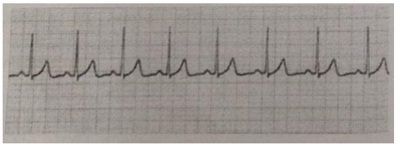
A Desfibrilação imediata com 200 joules.
B Verificar cargas, ganhos e derivações da monitorização.
C Pedir ajuda a outros membros da equipe de saúde e iniciar imediatamente o Suporte Básico de Vida.
D Acesso venoso imediato e epinefrina endovenosa.
Questão 77 · Tratamento da TVFV · Cardiologia · 4000154247Neste ano, o inverno na cidade de São Paulo foi rigoroso. Num dos dias em que a temperatura na madrugada chegou perto dos 1-2°C, foi conduzido, ao pronto-socorro, um paciente, morador de rua, não respondendo a estímulos, sem respirar, e a presença do pulso não foi identi cada. A temperatura central encontra-se menor do que 30ºC e o monitor cardíaco mostra o seguinte traçado: (Conforme imagem do caderno de questões) Neste momento, a conduta a ser tomada é:
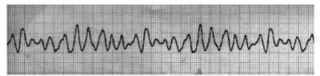
A Declarar o paciente morto.
B Reaquecimento externo ativo até haver a presença de pulso.
C Reaquecimento interno ativo, por meio de irrigação torácica, até haver a presença de pulso.
D Reaquecimento externo e interno ativo, por meio de circulação extracorpórea, até haver a presença de pulso.
E Desfibrilar, iniciar manobras de RCP, se necessário introduzir epinefrina, e realizar aquecimento agressivo por meio de circulação extracorpórea.
Questão 78 · Desf ibrilação · 4000105279Paciente feminina, 55 anos, deu entrada com diagnóstico de dor precordial, irradiando para membro superior esquerdo, iniciada pela manhã, associada a náuseas. Nega palpitações. Refere dor semelhante, de menor intensidade e duração, há 01 mês, relacionada a esforços físicos moderados. Refere ter diagnóstico, há 01 semana, de policitemia vera. História familiar de câncer e DM. Ao exame físico, apresenta-se com crepitações em bases pulmonares, pulsos periféricos cheios e simétricos. PA 140 x 90. Exame cardiovascular sem alterações. Apresenta o eletrocardiograma e a radiogra a de tórax a seguir: (conforme imagem do caderno de questões) Ao término de sua investigação da paciente, ela evoluiu com perda de consciência e com este traçado ao monitor cardíaco (conforme imagem do caderno de questões), além de e ausência de pulso carotídeo. Qual o tratamento?
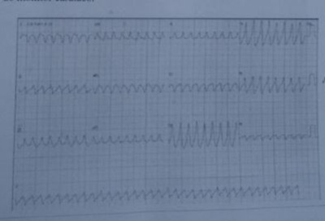
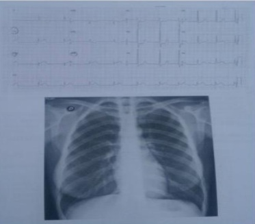
A Amiodarona EV.
B Propafenona EV.
C Cardioversão elétrica.
D Avaliação do cardiologista.
E Nenhuma das anteriores.
Questão 79 · Suporte Básico de Vida · 4000092358Assinale a assertiva INCORRETA sobre o manejo inicial de reanimação cardiorrespiratória em adultos.
A Ao ser encontrada uma vítima inconsciente, a primeira conduta é chamar por ajuda.
B A frequência das compressões torácicas deve ser de 100-120 compressões por minuto.
C A profundidade das compressões torácicas deve ser de 5-6 cm.
D As compressões torácicas devem ser sempre intercaladas com as ventilações numa proporção de 30/2, independentemente da forma de ventilação utilizada.
E Assim que o desfibrilador estiver disponível, o ritmo cardíaco deve ser ventilado imediata e independentemente do tempo de início das compressões torácicas.
Questão 80 · Síndrome do QT longo · 4000088016A síndrome do QT longo predispõe ao aparecimento de:
A Torsades des pointes.
B Flutter atrial.
C BAV total.
D Taquicardia paroxística supraventricular.
E Fibrilação atrial.
Questão 81 · Tratamento da TVFV · 4000066494Assinale a droga de primeira escolha para paciente apresentando fibrilação ventricular:
A Lidocaína.
B Amiodarona.
C Epinefrina.
D Procainamida.
Questão 82 · Tratamento da AESPassistolia · 4000059285No seu primeiro dia de residência médica você é chamado para avaliar um paciente internado que evolui com parada cardiorrespiratória. Ao monitorizá-lo você faz o diagnóstico de atividade elétrica sem pulso. Levando em consideração as recomendações do Advanced Cardiovascular Life Support da American Heart Association, o que você faz?
A Mantém compressões torácicas e infusão de adrenalina e busca causas reversíveis de atividade elétrica sem pulso como tamponamento cardíaco, pneumotórax, acidose e hipercalemia.
B Administra desfibrilação elétrica imediata seguida de seguida de 5 ciclos (2 minutos) de compressões torácicas, verificando novamente o ritmo após as compressões.
C Mantém compressões torácicas e infusão de adrenalina e de amiodarona por tempo indeterminado, não sendo necessários outros procedimentos.
D Administra cardioversão elétrica sincronizada imediatamente uma vez que a arritmia foi presenciada.
Questão 83 · Def inição · Cuidados pósressuscitação · 4000057074Sobre a síndrome Pós-Parada Cardiorrespiratória (PCR), marque a opção CORRETA.
A Trata-se unicamente de disfunção miocárdica, sendo o tratamento com inotrópicos imperativo.
B Ocorre devido à isquemia global difusa e lesões adicionais durante e após a reperfusão de múltiplos órgãos.
C Ocorre independentemente da duração da PCR, não havendo relação da mesma com a assistência primária prestada durante a reanimação cardiorrespiratória.
D Lesões cerebrais são raras quando a reanimação é rapidamente iniciada, mesmo nos casos em que a parada ocorreu fora do ambiente hospitalar.
Questão 84 · Compressões torácicas · 4000056805Idosa de 87 anos de idade apresentou di culdade respiratória súbita no domicílio, sendo trazida por familiares ao hospital, já sem sinais vitais. Foi, então, iniciado manobras de massagem cardíaca, ventilação e adrenalina. Massagem iniciou as manobras, com uma frequência mínima de 120 por minuto, aprofundando o tórax o máximo possível, mas permitindo seu retorno completo sem se apoiar sobre ele. Quando é avaliada a qualidade das manobras, sugere-se que seja mudada a conduta, baseado nas recentes diretrizes de emergência, alegando que:
A Foi perdido adequado tempo de massagem.
B Foi perdida eficácia da massagem cardíaca.
C Foi muito lenta a massagem cardíaca.
D Podemos nos apoiar no tórax.
Questão 85 · Compressões torácicas · 4000056797Jovem, 24 anos de idade, apresentou di culdade respiratória súbita no trabalho, sendo trazido por colegas ao hospital, já sem sinais vitais. Foi, então, iniciado manobras de massagem cardíaca, ventilação e adrenalina. Massagem iniciou as manobras, com uma frequência mínima de 100 por minuto, aprofundando o tórax o máximo possível, mas permitindo seu retorno completo sem se apoiar sobre ele. Quando é avaliada a qualidade das manobras, sugere-se que seja mudada a conduta, baseado nas recentes diretrizes de emergência. Desse modo, assinale a alternativa CORRETA:
A No mínimo, mantenha essa frequência de massagem.
B No máximo, mantenha essa frequência de massagem.
C No máximo, comprima o tórax por 6 cm.
D No mínimo, comprima o tórax por 2 polegadas.
Questão 86 · Compressões torácicas · 4000047696Um paciente encontra-se internado em um leito de emergência quando para de responder a comandos. O médico percebe que o paciente encontra-se também sem movimentos respiratórios e sem pulso central. Segundo as diretrizes de 2015 do ACLS, a conduta mais adequada para iniciar as manobras de reanimação para esse paciente é iniciar compressões torácicas na frequência cardíaca de:
A 100 a 120 por minuto, com profundidade de 5 a 6 centímetros. A cada 30 compressões, realizar 2 ventilações, utilizando um dispositivo balão-válvula-máscara.
B No mínimo 120 por minuto, com uma profundidade de pelo menos 5 centímetros. A cada 30 compressões, realizar 2 ventilações, utilizando um dispositivo balão-válvula- máscara.
C No mínimo 100 por minuto, com profundidade de pelo menos 6 centímetros. Ventilar utilizando um dispositivo balão-válvula-máscara com uma frequência entre 10 e 12 ventilações por minuto.
D 100 a 120 por minuto, com profundidade de 5 a 6 centímetros. Ventilar utilizando um dispositivo balão-válvula- máscara com uma frequência entre 10 e 12 ventilações por minuto.
E No mínimo 120 por minuto, com profundidade de pelo menos 5 centímetros. Ventilar, se disponível, utilizando um ventilador mecânico, com frequência entre 12 e 16 ventilações por minuto.
Questão 87 · Compressões torácicas · 4000043734Diversos são os fatores listados como adequados ou mesmo prejudiciais às condutas de reanimação cardiorrespiratória. Assim, podemos adequar as nossas condutas ao melhor possível em termos de sobrevivência da vítima. Dentre as afirmações a seguir, indique aquela que NÃO se enquadra nesse conceito.
A Apresenta grande importância o achado de lesões fatais, ocorridas quando da profundidade de massagem cardíaca acima de 6 cm.
B Manter uma frequência de compressões torácicas adequadas aumenta o percentual de massagem efetivamente eficiente.
C Permitir fluxo sanguíneo torácico com a massagem cardíaca adequada melhora as chances de sucesso.
D Hiperventilação se mostra prejudicial durante as manobras de reanimação.
Questão 88 · Tratamento da AESPassistolia · 4000041355Mulher de 40 anos está internada na enfermaria de Clínica Médica para investigação de diagnóstico etiológico de Insu ciência Renal Aguda. Nas últimas 24 horas, evolui oligúria e rebaixamento de nível de consciência. A enfermagem te chama dizendo que a paciente está "parada". Você se dirige ao quarto e constata que a paciente está arresponsiva. O pulso carotídeo está ausente. Ao monitorar a paciente você se depara com ritmo de assistolia. Após chamar ajuda, qual seria a conduta correta?
A Cardioversão sincronizada.
B Desfibrilação.
C Atropina.
D Massagem cardíaca.
E Vasopressina.
Questão 89 · Cuidados pósressuscitação · 4000037696Sobre o controle direcionado de temperatura em pacientes após PCR, podemos dizer que:
A Temperatura alvo entre 32° - 33° e mantida no máximo por 12 horas.
B Temperatura alvo entre 33° - 35° e mantida no máximo por 24 horas.
C Temperatura alvo entre 32° - 36° e mantida no máximo por 12 horas.
D Temperatura alvo entre 31° - 33° e mantida por pelo menos 12 horas.
E Temperatura alvo entre 32° - 36° e mantida por pelo menos 24 horas.
Questão 90 · Suporte Avançado de Vida · 4000037674A qual tipo de PCR a imagem abaixo (Conforme imagem no caderno de questões) se refere?
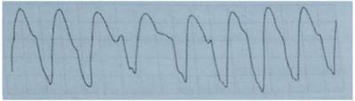
A Fibrilação Ventricular.
B Taquicardia ventricular sem pulso.
C Atividade elétrica sem pulso.
D Assistolia.
E Taquicardia.
Questão 91 · Tratamento da AESPassistolia · 4000030697Paciente deu entrada no setor de emergência em Parada Cardiorrespiratória (PCR). O monitor mostra o ECG a seguir: (Conforme imagem do caderno de questões). Qual a primeira conduta a ser tomada?
A Adrenalina precoce.
B 30 massagens cardíacas / 2 ventilações.
C Desfibrilação.
D Checar se cabo, ganho e derivação estão corretos.
Questão 92 · Torsades de pointes · 4000030402Qual o tratamento da arritmia mostrada no eletrocardiograma a seguir? (Conforme imagem do caderno de questões)
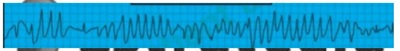
A Procainamida.
B Amiodarona.
C Bretílio.
D Sulfato de magnésio.
Questão 93 · Suporte Avançado de Vida · 4000028685Dentre as opções abaixo, é causa de parada cardiorrespiratória:
A Hipercalcemia.
B Hiperglicemia.
C Trombose venosa profunda.
D Hipertermia.
E Intoxicação por Organofosforado.
Questão 94 · Suporte Básico de Vida · 4000059975Você está assistindo na casa de seus avós a uma partida de futebol entre Brasil x Alemanha. Após o 7° gol da Alemanha, você se deparou com o seu avô "desacordado". O que fazer de imediato? Assinale a alternativa incorreta:
A Imediatamente dê um "soco no precórdio". Caso não ressuscite, inicie a as manobras de RCP, com as ventilações boca-a-boca alternando com as compressões torácicas eficazes.
B Em apenas dez segundos você estabelece algum contato e checa a presença de pulso central para identificar uma situação de parada cardiorrespiratória.
C Isole o local mantendo todas as pessoas afastadas ao seu redor numa distância de aproximadamente cinco metros e peça para alguém contatar 192 ou 193 e trazer um DEA.
D Sequenciar a abordagem colocando-o em decúbito dorsal no chão, desnude o tórax e inicie as compressões torácicas eficazes, numa frequência mínima de 100 por minuto.
E Não interromper as compressões torácicas até a chegada do desfibrilador.
Questão 95 · Distúrbios de ritmo cardíaco · Torsades de pointes · 4000045892As seguintes afirmativas se aplicam ao traçado eletrocardiográfico abaixo reproduzido, EXCETO:

A No tratamento dessa arritmia, está contraindicada a administração intravenosa do sulfato de magnésio, que deve ser reservada para o tratamento de algumas arritmias supraventriculares.
B O traçado eletrocardiográfico basal dos pacientes acometidos por essa arritmia costuma exibir prolongamento, congênito ou adquirido, do intervalo QT.
C Paradoxalmente, essa arritmia pode ser desencadeada por drogas antiarrítmicas das classes IA e III.
D Trata-se de uma modalidade de taquicardia ventricular polimórfica conhecida como torsades des pointes.
Questão 96 · Compressões torácicas · 4000126987Um homem com 53 anos de idade, tabagista e com história prévia de cardiopatia, tem parada cardiorrespiratória na unidade básica de saúde, enquanto aguardava atendimento. A sequência CORRETA de medidas a serem adotadas nessa situação é:
A Verificar o nível de consciência; acionar o serviço de emergência; verificar o pulso; iniciar compressões torácicas.
B Iniciar compressões torácicas; verificar o pulso; acionar o serviço de emergência; verificar o nível de consciência.
C Acionar o serviço de emergência; verificar o pulso; verificar o nível de consciência; iniciar compressões torácicas.
D Acionar o serviço de emergência; avaliar o nível de consciência; iniciar compressões torácicas.
Questão 97 · Suporte Avançado de Vida · 4000100334Idoso de 65 anos de idade é trazido pelo resgate até o Pronto-socorro em parada cardíaca, já sendo realizadas manobras de reanimação na fase pré-hospitalar. Mantendo manobras na sequência de C-A-B é conseguido adequada monitorização do paciente, sendo, então, diagnosticado pelo monitor cardíaco, um quadro de Fibrilação Ventricular. Imediatamente é realizada Des brilação com 360 J de corrente monofásica, como não é novamente encontrado pulso central (carotídeo) retornamos às manobras de C-A-B. Podemos considerar como adequadas as condutas tomadas no caso descrito, exceto uma das citadas abaixo. Marque-a:
A Realizar manobras na fase pré-hospitalar.
B Sequência compressão torácica – via aérea – ventilação.
C Monitorização do paciente.
D Após desfibrilação verificar pulso.
Questão 98 · QT longo adquirido · 4000067930Paciente feminina, 52 anos, com cardiopatia estrutural e alergia respiratória, está sendo tratada em função de sinusite aguda, fazendo uso de diversos fármacos. Subitamente, a paciente sente-se mal, sofrendo de "tonteiras" e palpitações, sendo levada a uma unidade de emergência, onde é constatada, ao exame físico, a presença de uma taquiarritmia. O eletrocardiograma revela a presença de taquicardia ventricular polimór ca do tipo torsades de pointes, sendo a paciente tratada com sulfato de magnésio IV, com reversão de arritmia. Da lista de medicações que a paciente vinha usando, a que pode prolongar o intervalo QT e, portanto, está relacionada à arritmia apresentada, é:
A Loratadina.
B Amoxicilina.
C Budesonida.
D N-acetilcisteína.
Revisar: possível letra faltando em enunciado
Questão 99 · TV polimórf ica · 4000127081Adolescente, após tentativa de suicídio com ingestão de antidepressivo tricíclico, manifestou parada cardiorrespiratória. Durante a reanimação cardiopulmonar, observou- se o seguinte ritmo no monitor cardíaco. A análise do monitor cardíaco permite afirmar que o traçado eletrocardiográfico demonstra ritmo de Respostas: 1 12 23 34 45 56 67 78 89
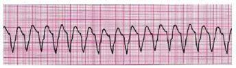
A taquicardia ventricular, que pode ser responsiva a choque e a uso de atropina.
B fibrilação ventricular, que pode ser responsiva a cardioversão (choque no modo sincronizado).
C fibrilação ventricular, que pode ser responsiva a desfibrilação (choque no modo sincronizado).
D taquicardia ventricular, que pode ser responsiva a cardioversão (choque no modo sincronizado).
E taquicardia ventricular, que pode ser responsiva a desfibrilação (choque no modo não sincronizado).